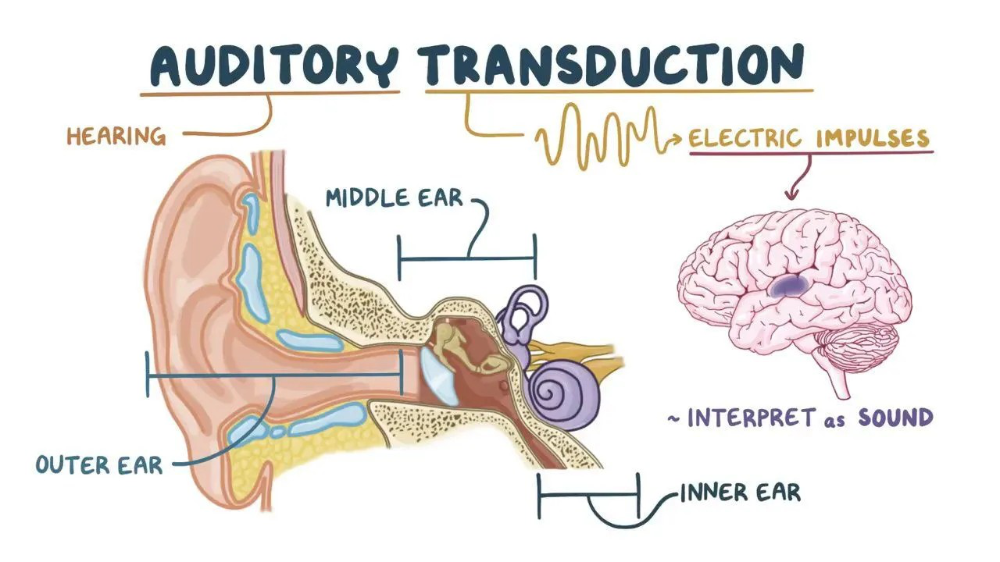
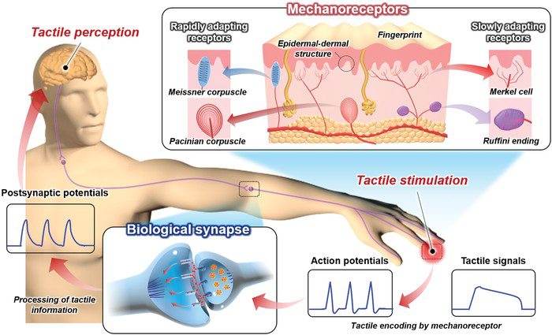
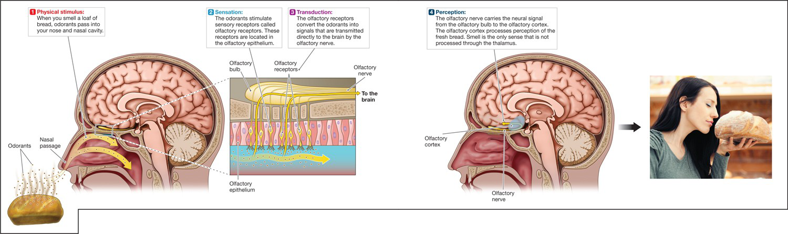
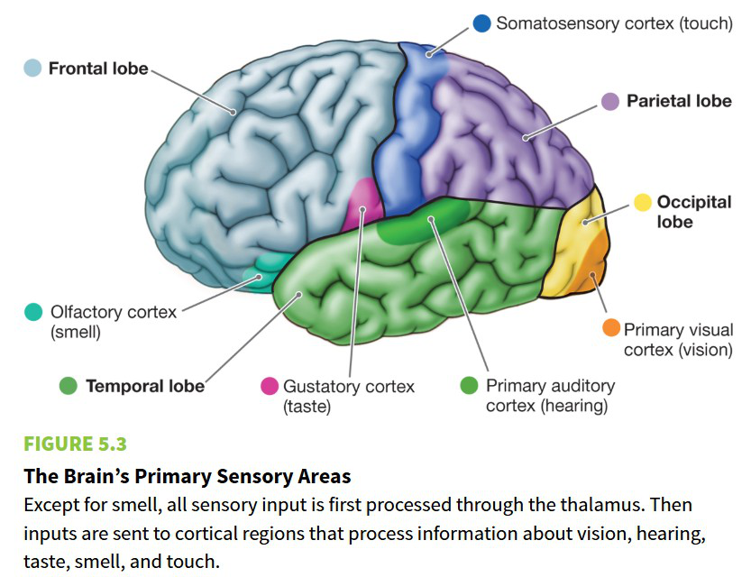
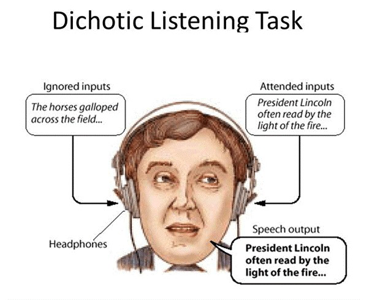
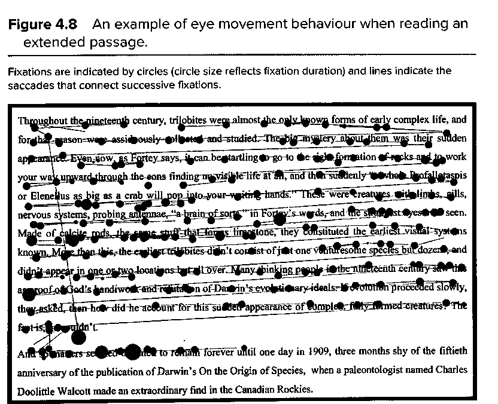
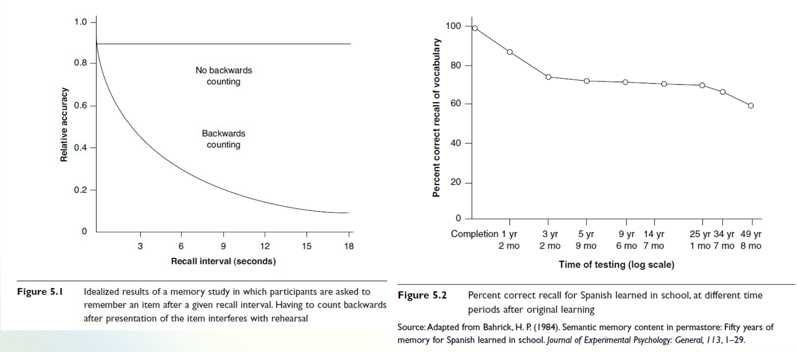

Nhận thức,
Ngôn ngữ và Tư duy
AIT3018 · Học kỳ I, năm học 2026-2027
Viện Trí tuệ nhân tạo · Trường Đại học Công nghệ, ĐHQGHN
Bài 4
Nhận thức và
tâm lý học nhận thức
Cảm giác · Tri giác · Chú ý · Trí nhớ
Vị cà phê đổi, hay gu đã đổi?
Quining Qualia · Daniel Dennett (1988)
Hai người nếm cà phê cho hãng Maxwell House. Sau khoảng sáu năm, cả hai đều không còn thích loại cà phê mà họ giữ vị suốt những năm qua.
Vị cà phê vẫn như xưa. Gu của tôi đã thay đổi.
Gu của tôi vẫn vậy. Bộ máy vị giác của tôi đã đổi, nên vị cà phê với tôi không còn như xưa.
Hiểu lập luận của Dennett
- Dennett dùng từ “qualia” với nghĩa gì? Ông mô tả quan niệm truyền thống về qualia như thế nào?
- Vì sao Dennett cho rằng qualia, theo định nghĩa truyền thống, không tồn tại?
- Dennett muốn nói gì khi bảo cần “quine” qualia? Cách làm đó phản ánh hướng tiếp cận triết học rộng hơn của ông ra sao?
Phân tích các luận điểm chính
- Dennett nêu nhiều thí nghiệm tưởng tượng (ví dụ: đảo phổ màu, hoán đổi bằng phẫu thuật thần kinh, ảo giác màu). Các trường hợp này nhằm cho thấy điều gì về sự bất ổn hoặc thiếu nhất quán của khái niệm qualia? Bạn có thấy chúng thuyết phục không? Vì sao có, vì sao không?
- Dennett nhìn nhận thế nào về nội quan (introspection) như một công cụ nghiên cứu ý thức? Quan điểm này khác gì các cách tiếp cận hiện tượng học hay nội quan truyền thống hơn?
Liên hệ với triết học tâm trí
- Lập luận của Dennett nằm trong khung chức năng luận (functionalism) hoặc vật lý luận (physicalism) như thế nào?
- So sánh quan điểm của Dennett với các triết gia bảo vệ qualia, như Thomas Nagel (“What Is It Like to Be a Bat?”) hoặc Frank Jackson (lập luận tri thức). Dennett có thể sẽ đáp lại họ thế nào?
- “Quining Qualia” có hàm ý gì cho khoa học về ý thức? Khoa học nhận thức có thể giải thích đầy đủ trải nghiệm chủ quan không?
Suy ngẫm và phản biện
- Nếu Dennett đúng rằng qualia theo quan niệm truyền thống không tồn tại, thì liệu bản thân trải nghiệm chủ quan có phải là ảo tưởng? Hay điều đó có nghĩa là ta cần một vốn từ mới để mô tả nó?
- Theo bạn, Dennett có thực sự loại bỏ được qualia, hay chỉ định nghĩa lại chúng theo hướng chức năng hơn?
- Bài luận này thách thức những giả định của chính bạn về cảm giác khi có ý thức như thế nào?
Nội dung buổi học
- Nhận thức
- Cảm giác
- Tri giác
- Chú ý
- Trí nhớ
1.
Nhận thức
Ta tiếp nhận và sử dụng hiểu biết như thế nào?
Nhận thức là gì?
Nhận thức (cognition): các quá trình giúp ta tiếp nhận, hình thành và sử dụng hiểu biết.
Tri giác · hình thành khái niệm · ghi nhớ · suy luận · phán đoán · tưởng tượng · giải quyết vấn đề
Ba mặt thường được phân biệt khi nghiên cứu tâm trí:
“Tôi hiểu bài.”
“Tôi thấy hứng thú.”
“Tôi quyết tâm học tiếp.”
Những khái niệm quen thuộc
| Khái niệm | Nội dung liên quan |
|---|---|
| Trí thông minh (intelligence) | Nắm bắt nhanh, thông tin, sự sáng suốt. |
| Trực giác (intuition) | Hiểu ra ngay (immediate insight). |
| Nhận biết (recognition) | Phân loại; xem xét lại và điều chỉnh. |
| Kỹ năng (skill) | Lập luận, kiến thức thực hành, chuyên môn. |
| Hiểu (understanding) | Phán đoán, ra quyết định, nắm được ý nghĩa. |
John G. Benjafield · Cognition
Vì sao học nhận thức?
| Với sinh viên CNTT | Một câu hỏi cần giải quyết |
|---|---|
| Xây dựng AI | Mô hình dùng được kiến thức khi tình huống thay đổi không? |
| Tương tác người-máy (human-computer interaction) | Cảnh báo có trên màn hình, người dùng đã nhận thấy chưa? |
| Học và làm việc | Đọc thấy quen, nhưng gấp tài liệu lại có giải thích được không? |
Tâm trí như một hệ xử lý thông tin
Tâm lý học nhận thức: nghiên cứu cách ta biểu diễn, xử lý và sử dụng thông tin.
Cách tiếp cận xử lý thông tin · Neisser (1967)
Hai cách mô hình hóa nhận thức
Theo giai đoạn
Các bước xử lý tách biệt, nối tiếp.
Liên hệ: pipeline nhận dạng chữ.
Kết nối (connectionist)
Nhiều đơn vị liên kết cùng tham gia xử lý.
Liên hệ: mạng học biểu diễn end-to-end.
Từ thực nghiệm đến mô hình
| Mốc | Cách nghiên cứu tâm trí |
|---|---|
| 1885 · Ebbinghaus | Đo việc học và quên bằng thực nghiệm. |
| 1932 · Bartlett | Xem con người nhớ và kể lại một câu chuyện thế nào. |
| 1948 · Wiener | Điều khiển học: thông tin và vòng phản hồi. |
| 1950 · Turing | Đặt câu hỏi về trí tuệ của máy qua một phép thử. |
Cuộc cách mạng nhận thức
| Mốc | Những hướng nghiên cứu gặp nhau |
|---|---|
| 1956 | Miller nghiên cứu giới hạn xử lý; hội thảo AI tại Dartmouth. |
| 1958 · Broadbent | Mô hình bộ lọc chú ý. |
| 1960 · Miller và Bruner | Trung tâm Nghiên cứu Nhận thức tại Harvard. |
| 1967 · Neisser | Sách Cognitive Psychology hệ thống hóa lĩnh vực. |
| 1968 · Atkinson và Shiffrin | Mô hình các kho trí nhớ. |
2.
Cảm giác
Từ kích thích bên ngoài đến tín hiệu thần kinh.
Chuyển đổi cảm giác: mắt và tai


Kích thích → chuyển đổi → dẫn truyền.
Chuyển đổi cảm giác (transduction): tế bào thụ cảm biến năng lượng kích thích thành tín hiệu điện.
Các thụ thể xúc giác

Thụ thể cơ học (mechanoreceptors) phát hiện biến dạng của da.
- Meissner: biến đổi tiếp xúc, vật trượt.
- Pacinian: rung truyền qua vật đang cầm.
- Merkel, Ruffini: sức ép, kết cấu, kéo giãn da.
Da nhân tạo

Da nhân tạo (artificial skin):
Lớp cảm biến (sensing) → lớp xử lý tri giác (perception) → tín hiệu cho hành động.
Đo tiếp sau mỗi lần điều chỉnh lực cầm.
Cảm nhận độ ướt
Hợp nhất đa giác quan (multisensory integration): phối hợp nhiều nguồn tín hiệu để nhận ra một thuộc tính.
Vị giác và khứu giác

Nụ vị giác (taste buds) tiếp nhận chất hòa tan. Năm vị cơ bản: ngọt, chua, mặn, đắng, umami.
Thụ thể khứu giác tiếp nhận phân tử mùi. Mùi góp phần lớn vào hương vị (flavor) của món ăn.
Các vùng cảm giác ở vỏ não

Thị giác (visual): thùy chẩm.
Thính giác (auditory): thùy thái dương.
Cảm giác thân thể (somatosensory): thùy đỉnh.
Các ngưỡng cảm giác
(absolute threshold)
Mức kích thích được phát hiện trong 50% số lần thử.
(difference threshold, JND)
Mức chênh nhỏ nhất có thể phân biệt theo tiêu chuẩn đo.
Quy luật Weber: ΔI / I ≈ k.
Thêm 10 g vào vật 100 g và thêm 10 g vào ba lô 10 kg: trường hợp nào dễ nhận ra hơn?
Phát hiện tín hiệu
| Thực tế | Báo có tín hiệu | Báo không có |
|---|---|---|
| Có tín hiệu | Phát hiện đúng (hit) | Bỏ sót (miss) |
| Không có tín hiệu | Báo nhầm (false alarm) | Từ chối đúng (correct rejection) |
Thích nghi cảm giác và quen dần

| Quá trình | Điều thay đổi |
|---|---|
| Thích nghi cảm giác (sensory adaptation) | Đáp ứng của hệ cảm giác giảm khi kích thích kéo dài. |
| Quen dần (habituation) | Phản ứng giảm qua việc kích thích lặp lại: một dạng học. |
3.
Tri giác
Tín hiệu cảm giác trở thành sự vật và sự kiện có nghĩa.
Từ dưới lên và từ trên xuống
Thông tin từ nét, âm và chi tiết của kích thích.
Kiến thức, kinh nghiệm và kỳ vọng hướng cách diễn giải.
Hình và nền

Hình và nền (figure-ground): cùng một ảnh, hai cách tổ chức đối tượng và phần phía sau.
Các quy luật Gestalt

Gần nhau · giống nhau · liên tục · khép kín · hình và nền · đối xứng và trật tự · cùng chuyển động.
Tri giác chiều sâu

Một mắt (monocular cues): phối cảnh, che khuất, kích thước tương đối.
Hai mắt (binocular cues): hai ảnh hơi khác nhau.
Gibson và Walk (1960): vực thẳm thị giác (visual cliff).
Tri giác chuyển động
| Hiện tượng | Tình huống |
|---|---|
| Thật (real) | Quả bóng đang lăn. |
| Biểu kiến (apparent) | Đèn chớp nối tiếp tạo cảm giác một vật chạy. |
| Cảm ứng (induced) | Tàu bên cạnh chạy, ta tưởng tàu mình chạy. |
| Tự chuyển động (autokinetic) | Đốm sáng đứng yên trong tối dường như trôi. |
| Hiệu ứng sau chuyển động (movement aftereffect) | Nhìn dòng nước lâu, rồi thấy vách đá trôi ngược. |
Vùng MT/V5 có vai trò nổi bật trong xử lý chuyển động.
Ảo ảnh chuyển động

Ảnh tĩnh: các điểm ảnh đang giữ nguyên.
Hằng định tri giác

Hằng định (constancy): kích thước, hình dạng, màu và độ sáng tương đối ổn định khi ảnh cảm giác đổi.
Hoàn tất phần bị che (amodal completion): nhận ra vật trọn vẹn dù chỉ thấy một phần.
Tri giác liên giác quan
Xem và nghe trước, ghi lại âm các bạn nghe được.
Tri giác liên giác quan (cross-modal perception): thông tin từ một giác quan ảnh hưởng cách ta cảm nhận tín hiệu của giác quan khác.
Âm “ba” + khẩu hình “ga” → một số người nghe gần với “da”.
Bối cảnh và kinh nghiệm
Hai ô xám cùng mã màu; hai đoạn thẳng cùng độ dài.
Giả thuyết thế giới nhiều góc cạnh (carpentered world hypothesis): kinh nghiệm với môi trường có thể liên quan mức nhạy với ảo ảnh Müller-Lyer.
4.
Chú ý
Tập trung nguồn lực có hạn vào một phần thông tin.
Các dạng chú ý
| Dạng chú ý | Ví dụ |
|---|---|
| Tập trung (focused) | Phản ứng khi nghe tiếng gọi. |
| Chọn lọc (selective) | Theo một giọng nói giữa nhiều giọng. |
| Duy trì (sustained) | Theo dõi một bài giải trong vài phút. |
| Chuyển đổi (alternating / shifting) | Chuyển từ yêu cầu sang kiểm tra mã. |
| Chia sẻ (divided) | Vừa nghe hướng dẫn vừa ghi ý chính. |
Thí nghiệm nghe hai tai

Cherry (1953)
Nghe hai thông điệp, mỗi tai một thông điệp.
Nhắc lại thành tiếng chỉ một bên.
Tai bị bỏ qua: nhận ra một số đặc điểm giọng nói, nhưng kể lại rất ít nội dung.
Bài thử chú ý chọn lọc
Đếm số lần chuyền bóng của những người mặc áo trắng.
Giữ kết quả của bạn để trao đổi sau khi xem.
Ba mô hình lọc chú ý
Mô hình đèn rọi chú ý
Posner (1980): giữ mắt ở giữa, hướng chú ý theo gợi ý.
Gợi ý đúng chỗ: thường phản ứng nhanh hơn.
Vùng chú ý có thể dịch chuyển mà mắt chưa chuyển.
Theo dõi mắt khi đọc

Điểm dừng mắt (fixation) · Bước nhảy mắt (saccade)
Hướng nhìn là dữ liệu cần đối chiếu với việc phát hiện và hiểu.
Giới hạn của chú ý
Nhiều yêu cầu cùng lúc có thể làm chậm và tăng lỗi.
Phải khôi phục mục tiêu và mạch đang xử lý.
Không nhận ra thay đổi giữa các cảnh: mù do thay đổi (change blindness).
Tải nhận thức khi học
| Loại tải (cognitive load) | Ví dụ và cách xử lý |
|---|---|
| Nội tại (intrinsic) | Logic bài khó: chia bước theo nền tảng người học. |
| Ngoại lai (extraneous) | Giải thích xa hình: đặt gần phần cần đối chiếu. |
| Phục vụ học (germane) | Tự giải thích vì sao một bước đúng. |
Rối loạn chú ý
| Trường hợp | Điều có thể quan sát |
|---|---|
| ADHD | Thiếu chú ý và/hoặc hiếu động, bốc đồng; kéo dài, ảnh hưởng sinh hoạt. |
| Bỏ quên nửa không gian (hemispatial neglect) | Thường sau tổn thương bán cầu phải: bỏ qua phần không gian bên trái. |
Ví dụ: chỉ ăn thức ăn ở nửa phải đĩa, vẽ bông hoa thiếu nửa trái.
5.
Trí nhớ
Mã hóa, lưu trữ và truy hồi thông tin.
Ba kho trí nhớ

Trí nhớ cảm giác (sensory memory) → trí nhớ ngắn hạn (short-term memory) ↔ trí nhớ dài hạn (long-term memory).
Thử nhớ một bảng chữ
Nhìn vào giữa khung. Chữ hiện khoảng 0,3 giây rồi tắt; ghi ra giấy những chữ còn nhớ.
Sẵn sàng
Làm ba lượt; sau mỗi lượt bấm “Xem lại bảng” để tự đếm số chữ đúng.
Trí nhớ cảm giác
| Cách hỏi | Kết quả của Sperling (1960) |
|---|---|
| Kể lại cả bảng 12 chữ | Khoảng 4-5 chữ. |
| Chuông chỉ một hàng ngay khi bảng tắt | Khoảng 3/4 chữ ở hàng được chỉ: suy ra khoảng 9/12 chữ còn sẵn dùng. |
| Chuông chỉ hàng trễ khoảng 1 giây | Lợi thế gần như mất hết: dấu vết đã phai. |
Trí nhớ hình ảnh (iconic): giữ nhiều thông tin trong khoảng 0,2-0,5 giây.
Trí nhớ âm thanh (echoic): kéo dài 2-4 giây.
Trí nhớ ngắn hạn và trí nhớ làm việc

Ngắn hạn (short-term memory): giữ tạm thông tin.
Làm việc (working memory): giữ và xử lý thông tin cho việc đang làm.
- Điều hành trung tâm (central executive)
- Vòng lặp âm vị (phonological loop)
- Bảng phác thảo thị giác-không gian (visuospatial sketchpad)
- Bộ đệm tình tiết (episodic buffer)
Gộp nhóm giúp nhớ nhiều hơn
I A I U E T V N U
IAI UET VNU
| Kết quả kinh điển | Cách hiểu |
|---|---|
| Miller (1956): khoảng 7 ± 2 đơn vị | Đơn vị có thể là một nhóm có nghĩa (chunk). |
| Cowan (2001): khoảng 4 đơn vị | Ước lượng khi hạn chế việc gộp nhóm và nhẩm lại. |
Các dạng trí nhớ dài hạn
| Dạng trí nhớ dài hạn | Ví dụ |
|---|---|
| Tình tiết (episodic) | Nhớ lần đầu bạn đến giảng đường này. |
| Ngữ nghĩa (semantic) | Biết Hà Nội là thủ đô Việt Nam. |
| Kỹ năng (procedural) | Biết đi xe đạp hoặc gõ bàn phím. |
Trí nhớ tường minh (explicit/declarative): nhớ lại sự kiện và kiến thức một cách có ý thức.
Trí nhớ không tường minh (implicit/nondeclarative): kinh nghiệm ảnh hưởng cách làm, có thể không cần nhớ lại lần học.
Quên theo thời gian

Trục dọc: mức nhớ đúng. Thời gian: giây ở hình trái; năm (thang logarit) ở hình phải.
Mạng ngữ nghĩa
có cánh · biết bay
biết hót · màu vàngĐà điểu
không biết bay
có vây · biết bơi
có thể cắnCá hồi
thịt màu hồng
Mạng ngữ nghĩa (semantic network): khái niệm là các nút; thuộc tính lưu ở cấp chung nhất và được kế thừa, ngoại lệ lưu riêng.
Mã hóa và truy hồi
Xử lý hình dạng, âm hay ý nghĩa. Xử lý ý nghĩa thường giúp nhớ tốt hơn.
Nhớ lại (recall): tự nêu ra. Nhận lại (recognition): chọn trong các phương án.
Gợi ý truy hồi: bối cảnh hoặc trạng thái lúc học có thể giúp gợi lại điều đã biết.
Từ kiến thức đến hành động
Trí nhớ làm việc: đèn phía trước đang đỏ.
Nếu đèn đỏ và cần dừng → đạp phanh.
Điều kiện khớp → chọn hành động phù hợp.
ACT* của Anderson (1983): trí nhớ làm việc ↔ trí nhớ khai báo / trí nhớ luật sản xuất.
Thông tin cũ và mới cản trở nhau
| Chiều ảnh hưởng | Ví dụ |
|---|---|
| Cũ cản trở mới (proactive interference) | Cứ nhớ ra tên các bạn lớp năm ngoái nên khó thuộc tên lớp năm nay. |
| Mới cản trở cũ (retroactive interference) | Thuộc tên lớp năm nay rồi thì khó nhớ lại tên lớp năm ngoái. |
Nội dung gần giống có thể vừa hỗ trợ học vừa gây nhầm lẫn.
- Tinh chỉnh (fine-tuning) mô hình ngôn ngữ lớn cho việc mới làm nó kém đi ở kiến thức và kỹ năng cũ (Luo và cộng sự, 2025).
- Trong phép thử A-B-A, điều kiện Near giúp học B hơn Far nhưng gây cản trở A nhiều hơn (Holton và cộng sự, 2026).
Cảm xúc và trí nhớ
Gắn ý nghĩa cảm xúc với trải nghiệm; ảnh hưởng việc củng cố.
Giúp hình thành ký ức tường minh về sự kiện và bối cảnh.
Cùng tham gia biểu diễn thông tin và sử dụng ký ức.
Ký ức chớp sáng
Ký ức chớp sáng (flashbulb memory): hồi tưởng sống động hoàn cảnh biết một tin quan trọng, đậm cảm xúc.
| Qua thời gian | Kết quả Talarico và Rubin (2003) |
|---|---|
| Chi tiết kể lại | Độ nhất quán giảm ở cả ký ức chớp sáng và ký ức thường. |
| Cảm giác về ký ức | Ký ức chớp sáng vẫn được đánh giá sống động và đáng tin hơn. |
Trí nhớ tái dựng
Khung tri thức (schema) giúp tổ chức và diễn giải điều ta trải qua.
Vào quán → gọi món → ăn → thanh toán.
Nhớ các chi tiết cùng ý nghĩa và điều mình mong đợi.
Câu hỏi có thể làm thay đổi lời kể
Loftus và Palmer (1974): xem phim va chạm xe, rồi bị hỏi tốc độ bằng các từ khác nhau.
| Từ trong câu hỏi | Nói đã thấy kính vỡ, sau một tuần |
|---|---|
| “Smashed” · đâm sầm | 32% (16/50) |
| “Hit” · va vào | 14% (7/50) |
| Không hỏi về tốc độ | 12% (6/50) |
Trong phim không có kính vỡ. Cách hỏi có thể góp phần tạo ký ức giả (false memory).
H.M. và các dạng mất trí nhớ

Henry Molaison (H.M.): phẫu thuật vùng thái dương trong hai bên năm 1953 để chữa động kinh.
Mất trí nhớ thuận chiều (anterograde amnesia): khó tạo ký ức tường minh mới, nhưng vẫn học được kỹ năng.
Mất trí nhớ ngược chiều (retrograde amnesia): khó nhớ lại điều xảy ra trước tổn thương.
Hồi hải mã (hippocampus): then chốt để tạo ký ức tường minh.
Các dạng rối loạn trí nhớ
| Trường hợp | Điểm cần phân biệt |
|---|---|
| Mất trí nhớ thuận / ngược chiều | Khó học ký ức mới / khó truy hồi ký ức trước tổn thương. |
| Alzheimer | Bệnh thoái hóa thần kinh; trí nhớ và các chức năng khác có thể suy giảm. |
| Wernicke-Korsakoff | Liên quan thiếu vitamin B1; có thể mất trí nhớ và bịa chuyện không chủ ý. |
Dùng hiểu biết về trí nhớ để học
- Hiểu bằng ví dụ: tự tạo tình huống cho một khái niệm.
- Tự nhớ lại: đóng tài liệu rồi giải thích bằng lời của mình.
- Ôn cách quãng: quay lại sau một khoảng thời gian.
- Kiểm tra và sửa: đối chiếu phần còn thiếu hoặc nhầm.
Quay lại một tình huống quen thuộc
Giữa quán đông người, bạn nghe thấy tên mình rồi quay lại.
Quiz cuối buổi 4
Mở Quiz cuối buổi 4 trên Canvas.
10 câu về nhận thức, cảm giác, tri giác, chú ý và trí nhớ.
Bài đọc trước Buổi 5
- Miller (1956): The Magical Number Seven, Plus or Minus Two.
- Wason (1968): Reasoning about a Rule.
- Làm Quiz bài đọc 4 trước Buổi 5.
Dùng bản trên Canvas. Khi đọc, xác định nhiệm vụ, dự đoán, kết quả và cách tác giả giải thích.